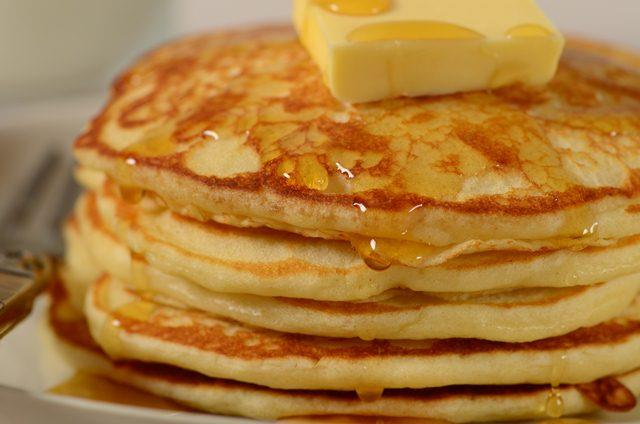

Pancakes

Description
Quick and simple homemade pancakes using common kitchen ingredients.
Ingredients
Ingredients you will need:
- 1 cup flour.
- 1 teaspoon sugar.
- 1/2 teaspoon salt.
- 3 teaspoon baking powder.
- 1 egg.
- 3/4 cup milk.
- 2 teaspoon cooking oil.
- *3 or 4 pats of butter for pan.
Steps
- Add all ingredients except butter into a mixing bowl.
- Mix ingredients thoroughly.
- Place cooking pan on medium heat.
- Add 1 pat of butter and melt across surface of pan.
- Add several 4 inch diameter blobs of pancake batter. (Make sure pancakes do not touch)
- Flip once top of pancakes start to bubble.
- Wait about 30 seconds to a minute to flip again.
- Continue cooking till desired browness.
- Repeat steps 4 - 9 till all the batter is used up.
- Enjoy.